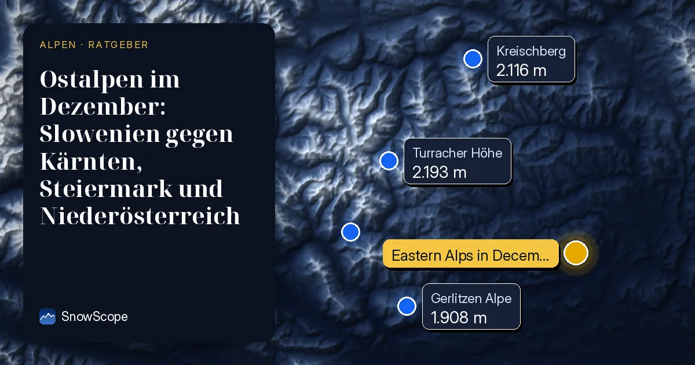

Ostalpen im Dezember: Slowenien gegen Kärnten, Steiermark und Niederösterreich
Je weiter man in den Alpen nach Osten fährt, desto niedriger die Preise – und desto weniger Dezemberschnee. Slowenien hat die günstigsten Skipässe dieses Vergleichs, ab 45 EUR pro Tag, aber am Krvavec, am Vogel, auf der Rogla und am Mariborsko Pohorje hatten höchstens 24 % unserer Winter in der Woche vom 15. bis 21. Dezember 30 cm an der Mittelstation. Die österreichische Seite kostet mehr und liefert mehr.
Die Live-Schneeprognose für Eastern Alps in December in der SnowScope-AppSchneehöhen, Pulverschnee-Alarme und 3D-Karte, gratis.
Die kurze Antwort
Wer im Dezember Naturschnee braucht, fährt in die höheren österreichischen Gebiete: Mölltaler Gletscher (8), Lachtal (7) oder Hochkar (9). Wer nahe Ljubljana oder Maribor wohnt und am Tag selbst entscheiden kann, findet in den slowenischen Hügeln viel fürs Geld – wenn deren eigene Schneeberichte gut sind.
Ein Hinweis zum Umfang: Wir vergleichen nur Skigebiete, für die wir 46 Winter Schneehistorie haben. Gebiete in Tschechien, der Slowakei, Polen, Rumänien und Bulgarien sind noch nicht in unserer Historie und werden hier deshalb nicht bewertet.

Slowenien: günstig, und ehrlich beim Schnee
Der Krvavec (1) ist mit Liften bis 1963 m der höchste der vier und der beliebteste von Ljubljana aus. Die Tageskarte kostet 47 EUR, der 6-Tage-Skipass 205 EUR. Die Mittelstation hatte Mitte Dezember in 24 % unserer Winter 30 cm, in den jüngeren Weihnachtswochen nur in 13 %.
Die Rogla (3) ist ähnlich: 49 EUR pro Tag (44 EUR in der Vorsaison), 210 bis 237 EUR für 6 Tage und 22 % der Winter mit 30 cm an der Mittelstation Mitte Dezember. Der Vogel (2) über dem Bohinjer See kostet 49 EUR pro Tag und 230 EUR für 6 Tage; sein Gipfel hatte in 30 % der Winter 30 cm, seine Mitte in 9 %. Das Mariborsko Pohorje (4), das tiefste, kostet 45 EUR pro Tag und hatte in dieser Woche in keinem unserer Winter 30 cm an der Mittelstation.
Kärnten: ein Gletscher und zwei Wetten
Der Mölltaler Gletscher (8) ist das einzig Sichere in dieser Region: 128 cm an der Mittelstation an einem typischen 15. Dezember und dort Mitte Dezember in jedem unserer Winter 30 cm. Sein 6-Tage-Skipass kostete laut zuletzt veröffentlichter Liste (2025-26) 332 EUR in der Nebensaison.
Das Nassfeld (5) an der italienischen Grenze ist groß (70 km kartierte Pisten), unten aber tief: Sein Gipfel hatte Mitte Dezember in 63 % der Winter 30 cm, seine Mitte in 22 %. Sechs Tage kosten früh in der Saison 353 EUR, später 381 EUR. Die Turracher Höhe (6) ist bei Schnee (39 % an der Mittelstation) und Preis (353 EUR für 6 Tage in der Nebensaison) ähnlich.
Steiermark und Niederösterreich: der Mittelweg
Das Lachtal (7) in der Steiermark hatte Mitte Dezember in 72 % der Winter 30 cm an der Mittelstation, für 62 EUR pro Tag oder 293,50 EUR für 6 Tage in der Nebenzeit. Der Hochkar (9) in Niederösterreich hatte 63 %, mit dynamischen Tagespreisen ab 32,90 EUR an ruhigen Dezembertagen.
Beide haben über die Jahre viel Dezemberschnee verloren – nimm sie als Ziele bei guter Prognose, nicht als fixe Buchung.
So wählst du
Fixe Woche vor Weihnachten ohne Schneerisiko: Mölltaler Gletscher. Günstiges langes Wochenende, spät entschieden: Lachtal oder Hochkar. Tagesausflüge aus slowenischen Städten: Krvavec oder Rogla an Tagen, an denen ihre Pisten als offen und eingeschneit gemeldet sind. Für alles andere in Slowenien sind Januar und Februar die sichereren Monate.
Tipps für Skifahrer
- In Slowenien an guten Tagen Tageskarten kaufen statt eine Dezemberwoche im Voraus.
- Für eine fixe Dezemberwoche in dieser Region ist der Mölltaler Gletscher der einzige fast sichere Schnee.
- Ein paar Tage vorher die Schneekarte nutzen: Die östlichen Hügel ändern sich mit jedem Sturm schnell.
- Vor dem Verlassen der Piste den slowenischen, Kärntner oder steirischen Lawinenbericht lesen.
Quellen und Nachweise
- Krvavec: official lift-pass prices (2026-27), checked 13 November 2026 rtc-krvavec.si/cenik-urnik
- Vogel: official lift-pass prices (2026-27), checked 13 November 2026 vogel.si/cenik-zima/
- Rogla: official lift-pass prices (2026-27), checked 13 November 2026 www.rogla.eu/sl/aktualna-ponudba/ceniki/zimske-aktivnosti/cenik-smucarskih-vozovnic-v-sezoni-20262027/
- Mariborsko Pohorje: official lift-pass prices (2026-27), checked 13 November 2026 www.visitpohorje.si/ceniki/smucisce/
- Nassfeld: official lift-pass prices (2026-27), checked 13 November 2026 www.nassfeld.at/en/Winter-World/Sun-Ski-World/Skigebiet-Nassfeld/Skipasspreise/Tages-Mehrtageskarten
- Turracher Höhe: official lift-pass prices (2026-27), checked 13 November 2026 www.turracherhoehe.at/en/winter/tariffs
- Lachtal: official lift-pass prices (2026-27), checked 13 November 2026 www.lachtal.at/en/tickets-prices/day-ski-passes/
- Mölltaler Gletscher: official lift-pass prices (2025-26), checked 13 November 2026 www.moelltaler-gletscher.at/en/price-list/winter/moelltaler-gletscher
- Hochkar: official lift-pass prices (2026-27), checked 13 November 2026 shop.hochkar.com/en/products/skitickets
Zu diesen Zahlen
Schneewerte: SnowScope-Schneehistorie, 46 vergangene Winter (1980-81 bis 2025-26) auf den Höhen des Skigebiets, höhenkorrigiert (eine Schätzung für eine Fläche, keine Meldungen des Skigebiets); „guter Schnee“ = im Wochenmittel 30 cm oder mehr am Boden. Karte: unsere übliche Schneehöhe am 15. Dezember, nach Höhe auf das Gelände verteilt. Pisten und Lifte: OpenSkiMap-Kartierung. Skipasspreise: offizielle Preislisten der Skigebiete, geprüft am 13. November 2026; Preise können sich ändern.
Diesen Bericht zitieren
Für Forschung, Lehre oder Presse: Zahlen und Grafiken sind unter CC BY 4.0 mit dieser Quellenangabe frei nutzbar.
SnowScope (2026), Ostalpen im Dezember: Slowenien gegen Kärnten, Steiermark und Niederösterreich, https://snowscope.app/blog/de/2026/11/eastern-alps-december-ski-value-slovenia-carinthia-styria.html, abgerufen am 2026-11-14
SnowScope (Atlas Labs). (2026, November 14). Ostalpen im Dezember: Slowenien gegen Kärnten, Steiermark und Niederösterreich. SnowScope snow reports. https://snowscope.app/blog/de/2026/11/eastern-alps-december-ski-value-slovenia-carinthia-styria.html
BibTeX
@misc{snowscope2026easternalpsdecemberskiva,
author = {{SnowScope (Atlas Labs)}},
title = {Ostalpen im Dezember: Slowenien gegen Kärnten, Steiermark und Niederösterreich},
year = {2026},
month = nov,
howpublished = {\url{https://snowscope.app/blog/de/2026/11/eastern-alps-december-ski-value-slovenia-carinthia-styria.html}},
note = {Published 2026-11-14 17:54 UTC; accessed 2026-11-14}
}· CC BY 4.0 · Methoden, Daten und Werkzeuge →
Eastern Alps in December folgen
Gratis: eine Nachricht, wenn Neuschnee kommt, und jeden Morgen die Vorhersage.
Weitere Schneeberichte

Krvavec auf Mittelhöhe hat am 15. Dezember in 46 Wintern typisch 13 cm Schnee, aber in 11 davon blanken Boden. Tagesticket EUR 47.

Der Mölltaler Gletscher über Flattach: übliche Schneehöhe im Tal, an der Mittelstation und am Gipfel aus 46 vergangenen Wintern, vom ersten Schnee im September bis zum Skifahren im Mai.